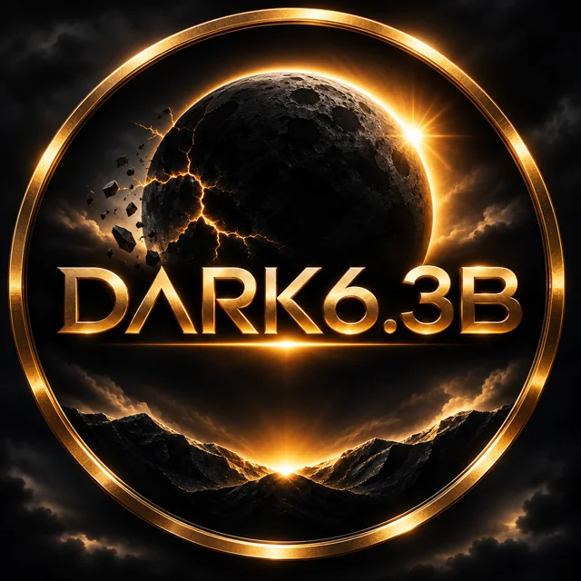

≈ $6.34B
Affected
Binance's figure for affected assets. TRM Labs counted about $6.36B leaving wallets.

DARK6.3BWhen the lights went dark
A day remembered. A community united. A purpose beyond the darkness.
Chapter one
On the evening of October 29, 2026, attackers moved about $6.3 billion out of Binance hot wallets in roughly twenty minutes. It is the largest theft of digital assets on record. This is what is known, in the order it happened.
Last checked November 8, 2026. Investigations are ongoing and reported figures may change.
≈ $6.34B
Binance's figure for affected assets. TRM Labs counted about $6.36B leaving wallets.
≈ $2.85–3B
Held by stablecoin issuers, partners and law enforcement. Estimates differ by source and date.
95%
Share of affected assets Binance said it had replenished from its own reserves by November 1.
Sources: Binance (X), StealthEX
These are three different measures. Frozen funds are not the same as returned funds, and Binance covered users from its own reserves, not from recovered assets. Don't add or subtract them.
Funds began leaving Binance hot wallets across about ten blockchains. Most of the movement unfolded in roughly twenty minutes. Reports say private keys were not taken; the attackers used internal access to push transactions through.
Stablecoin issuers and industry partners, including Tether, Circle, Ripple and World Liberty Financial, froze stolen tokens as they moved.
Sources: StealthEX, TechCrunch, Time News
Binance said it was aware of a potential security issue, was investigating, and that user funds were safe. It warned users to stay alert for scams.
Sources: Binance (X), TechCrunch
Deposits and withdrawals were paused. Binance estimated the impact at about $6.3 billion. Deposits resumed a few hours later; withdrawals stayed closed.
Sources: Binance (X), StealthEX, ABC13
Binance said it set aside more than $6.34 billion from its SAFU fund, insurance fund and treasury, and reported coverage of affected assets rising from 80% to 90% to 95% over three days.
Sources: Binance (X), Binance (X), Binance (X), ABC13
The FBI attributed the attack to North Korean actors it tracks as TraderTraitor, the group it also links to the February 2025 Bybit theft.
Sources: FBI Cyber Division (X), ABC13, Time News
Withdrawals resumed in phases, starting with Bitcoin. Some networks had no reopening date at the time of reporting.
Sources: StealthEX
DARK6.3B is not affiliated with Binance. Where a figure differs between sources, this page says so rather than choosing one.
Chapter two
Some moments change an industry forever. What we choose to build afterward defines us.
Keep an accurate record of October 29: what happened, when, and what is still unknown. Sourced, dated, and corrected when the facts change.
Turn the method of the attack into lessons anyone can use. This breach started with a job interview and a download, and the same tricks are aimed at ordinary holders every day.
Once the community coin launches on pump.fun, direct its creator fees to documented public-benefit causes, and publish every step so anyone can check it.
Chapter three
DARK6.3B is planned as a community token on pump.fun: a symbol of remembrance and shared participation. It is not an investment, and nothing here promises a financial return.
Official contract
Published here at launch
Until a contract address appears on this page and in verified channels, any token using the DARK6.3B name is not ours. Treat any presale, airdrop or early-access offer as a scam unless it is announced here.
Chapter four
The founder's intention is that creator fees from the community coin fund meaningful public-benefit work. Intentions are cheap, so this ledger is built to be checked. It stays empty until real money exists.
No distributions yet. Each one will list the beneficiary, purpose, amount, on-chain transaction and supporting evidence.
Creator fees arrive in a single published wallet.
Each inflow is logged with its on-chain transaction.
Beneficiaries are checked against published criteria before any commitment.
Funds go out on-chain, one transaction per purpose.
Receipts, transaction links and the remaining balance are published here.
Chapter five
A quiet place for short messages about what security, transparency and community mean to you. It opens in Phase 2, once moderation and privacy handling are in place. Nothing is published before then.
Chapter six
Measured in things delivered, not in price. A phase is marked complete only when there is evidence to link to.